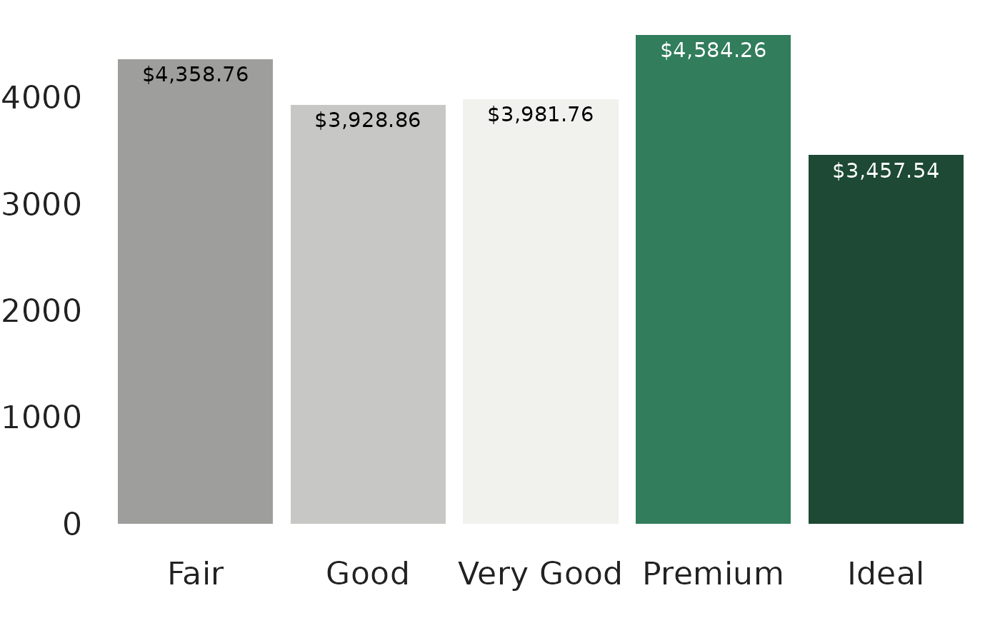

Get appropriate high-contrast text colors for a vector of background colors.
This function uses the W3C contrast ratio guidance (through the
colorspace::contrast_ratio() function) to determine the contrast,
and will raise an error if no high-enough contrast colors can be found.
Usage
choose_text_color(bg_color, text_colors = c("black", "white"), min_ratio = 4.5)Details
By default, this function uses black and white as the text color options,
however custom text color options can be set with the text_colors
argument.
Examples
library(ggplot2)
fills <- tntp_palette("top2_5")
diamonds |>
dplyr::summarize(m = mean(price), .by = cut) |>
ggplot(aes(cut, m, fill = cut)) +
geom_col() +
geom_text(aes(label = scales::dollar(m), color = cut), vjust = 1.5) +
scale_fill_manual(values = fills, guide = "none") +
scale_color_manual(values = choose_text_color(fills), guide = "none") +
tntp_style(family = "sans")
